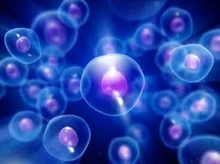
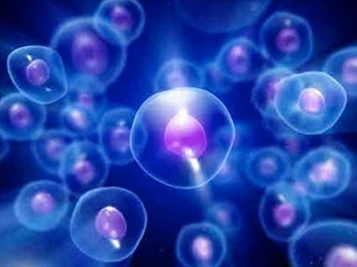

Senser
Sensors have 2 type for transfer data

Sensors have 3 type of mechanic
1. Chemical sensors
2. Physical Sensors 3. Bio Sebsors
A physical sensor is a device that measures a physical quantity
(like temperature) and converts it into a signal which
can be read by an observer or by an instrument.
 Chemical sensors are are measurement devices that convert
a chemical or physical property of a specific analyte
into a measurable signal, whose magnitude is normally
proportional to the concentration of the analyte

Bio sensors are an analytical device that detects changes
in Biological processes and converts them into
an electrical signal. The term Biological process can be
any biological element or material like
enzymes, tissues, microorganisms, cells, acids, etc.
Chemical sensors are are measurement devices that convert
a chemical or physical property of a specific analyte
into a measurable signal, whose magnitude is normally
proportional to the concentration of the analyte

Bio sensors are an analytical device that detects changes
in Biological processes and converts them into
an electrical signal. The term Biological process can be
any biological element or material like
enzymes, tissues, microorganisms, cells, acids, etc.